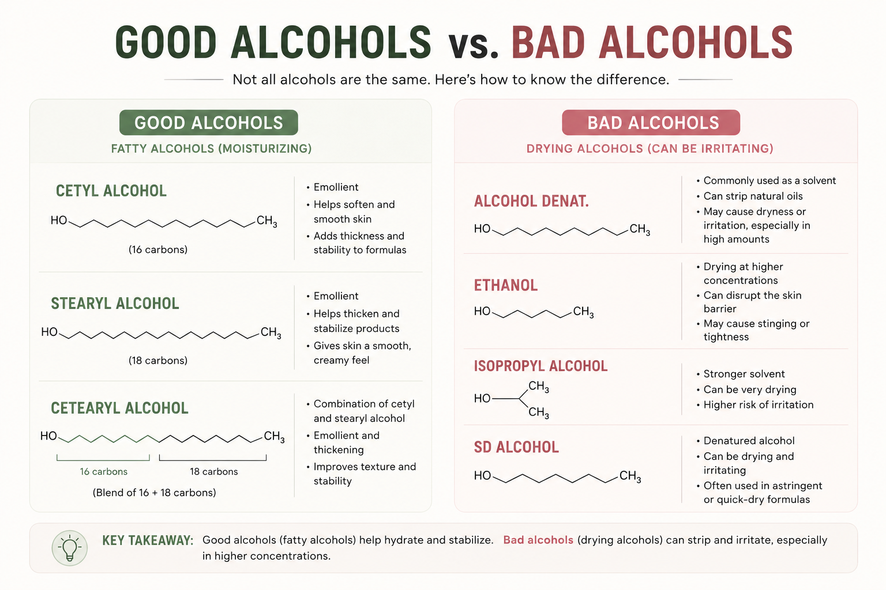

You’ve probably seen it everywhere.
On a toner. A moisturizer. A serum. Maybe even a sunscreen.
The implication is pretty clear: alcohol = bad, and removing it = better for your skin.
Except beauty labels are rarely that simple.
Because “alcohol” isn’t actually one ingredient. It’s a huge chemical family, and some alcohols can be drying while others are commonly used to make moisturizers softer, smoother, and more stable.
So we looked behind the label.
The “Alcohol-Free” Label Sounds More Meaningful Than It Is
Here’s the first thing brands don’t always make obvious:
Alcohol-free does not mean free of every ingredient with “alcohol” in its name.
The FDA notes that when “alcohol” is used by itself on a cosmetic ingredient list, it refers to ethyl alcohol, or ethanol. But a product marketed as alcohol-free can still contain ingredients such as cetyl alcohol, stearyl alcohol, or cetearyl alcohol.
And those ingredients aren’t the same thing as the alcohol you might be imagining.
They’re called fatty alcohols.
Unlike ethanol, fatty alcohols are waxy ingredients commonly used as emollients, thickeners, and stabilizers. They can help give a moisturizer that creamy texture you actually want from a moisturizer.
So if you see:
…it doesn’t necessarily mean:
It usually means something much more specific.
So Which Alcohol Is Actually the Problem?
This is where the beauty industry’s favorite ingredient scare story starts to fall apart.
There are alcohols that can be drying or irritating, particularly in higher concentrations or for people with dry or sensitive skin.
Look for names such as:
- Alcohol Denat.
- Ethanol
- SD Alcohol
- Isopropyl Alcohol
These are generally low-molecular-weight alcohols. They’re often used because they evaporate quickly, dissolve other ingredients, help formulas feel lightweight, or provide antimicrobial properties.
And yes, they can be irritating.
Especially when your skin is already struggling with dryness or a compromised barrier.
But that doesn’t automatically make every product containing one of these ingredients “bad.”
Formulation matters.
The concentration, the rest of the formula, how frequently you’re using it, and how your own skin responds can all matter more than the scary word on the ingredient list.
Then There Are the “Good” Alcohols
This is the part that gets lost on TikTok.
- Cetyl alcohol.
- Stearyl alcohol.
- Cetearyl alcohol.
They all have “alcohol” in their names.
And they’re not automatically ingredients you need to run from.
Fatty alcohols are commonly used in creams and lotions to improve texture and help stabilize the formula. They can also function as emollients, helping skin feel softer and smoother.
In other words:
“Alcohol” is not a skin type.
It’s a chemical category.
And judging every ingredient by one word is about as useful as deciding a person is suspicious because their name starts with the letter A.

So Is “Alcohol-Free” Actually Better?
Not necessarily.
For someone with dry, sensitive, or easily irritated skin, avoiding products that contain high amounts of drying alcohols may be a perfectly reasonable choice.
But an “alcohol-free” claim alone doesn’t tell you whether a product is going to be more hydrating, gentler, or better formulated.
And it definitely doesn’t tell you whether the product contains fatty alcohols.
The better question isn’t:
It’s:
That question is considerably less catchy on a product label.
Which may be exactly why you don’t see it printed in giant letters on the front of the bottle.
The Bigger Beauty Lie: One Ingredient = Good or Bad
This is where we have a problem with ingredient fearmongering.
Beauty marketing loves a villain.
First it was parabens.
Then sulfates.
Then “chemicals.”
Now alcohol.
The formula is simple:
Find a scary-sounding ingredient → declare it toxic → sell you the “clean” alternative.
But cosmetic formulas don’t work in good-versus-bad ingredient lists.
An ingredient can serve an important purpose in one formula and be irritating in another. A product can contain a potentially drying ingredient and still work beautifully for someone. And a product covered in “free-from” claims can still be completely wrong for your skin.
The ingredient list matters.
But context matters more.
What to Look For Instead
Next time you see ALCOHOL-FREE plastered across a bottle, don’t automatically assume you’ve found the gentler option.
Flip it over.
Look at the ingredient list.
If you see Alcohol Denat., ethanol, or SD Alcohol near the top, take a closer look at what the product is designed to do and how your skin reacts to it.
If you see cetyl alcohol, stearyl alcohol, or cetearyl alcohol, don’t panic.
Those are fatty alcohols, and they’re commonly used in moisturizing and conditioning formulas.
And if a brand is making a huge deal about being “alcohol-free”?
Ask yourself one more question:
Because sometimes the most reassuring words on a beauty bottle aren’t telling you what’s in the product.
They’re telling you what the marketing team wants you to think isn’t.
Truth Behind Beauty Verdict: ⚠️ Misleading
“Alcohol-free” is a real claim about a narrow thing: ethyl alcohol. It is not a promise that a formula contains no alcohols, and it is not a promise that the formula is gentler, more hydrating, or better made. A product can carry the badge and still be wrong for your skin, and a product without it can be perfectly comfortable. Read the ingredient list and ask which alcohol is in there and why.